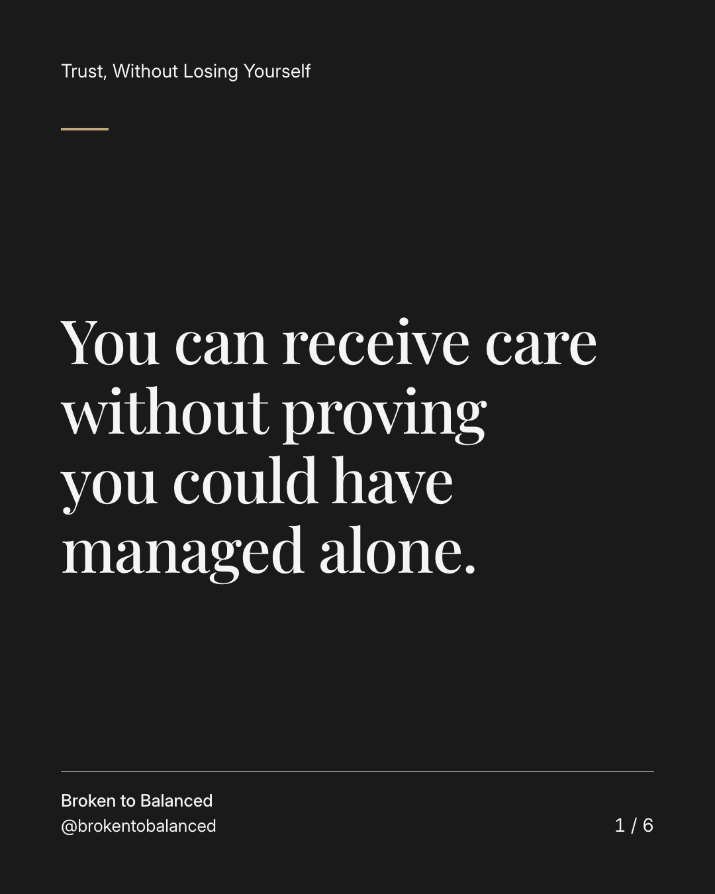
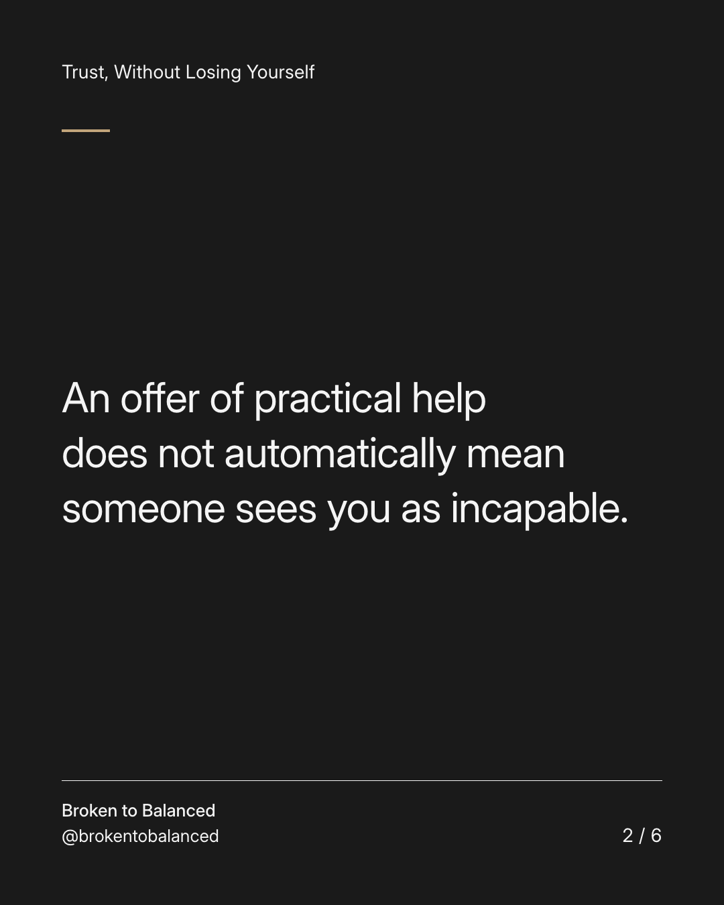
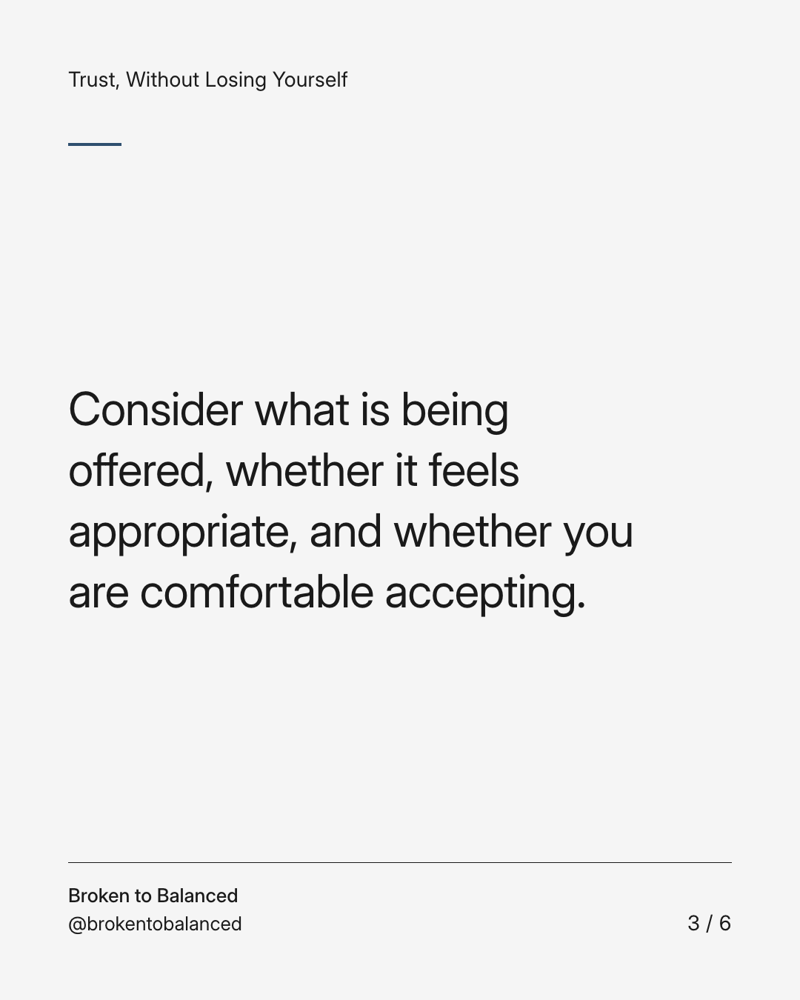
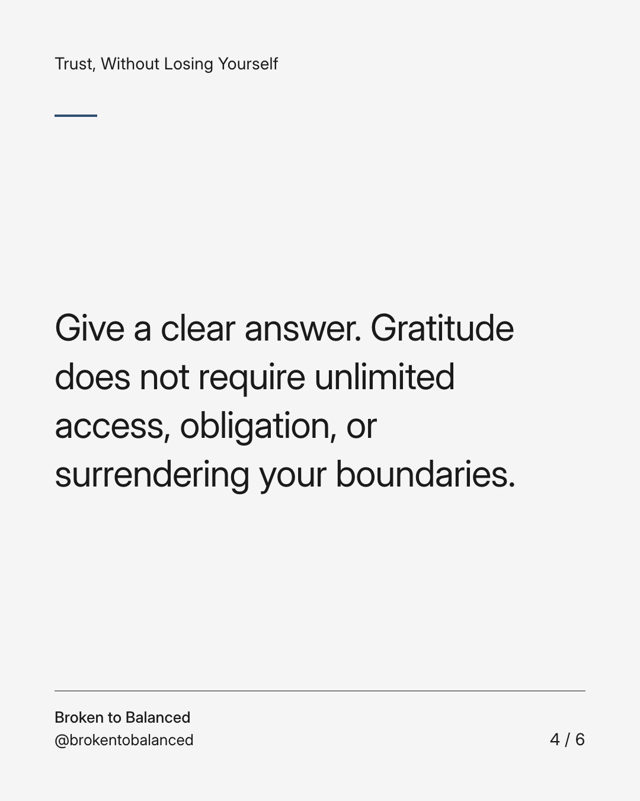
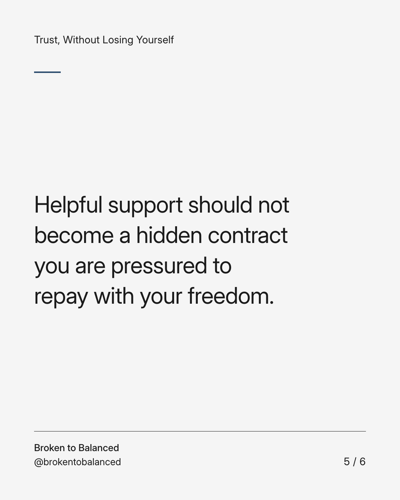
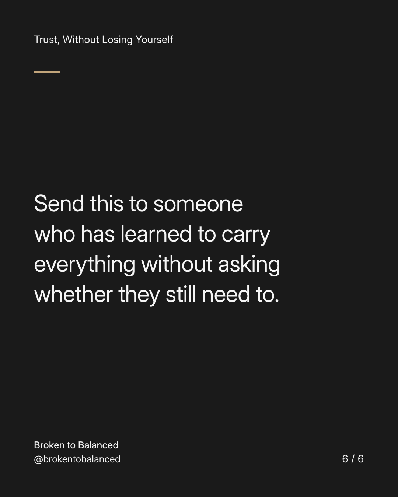

Exact text and accessibility text
You can receive care without proving you could have managed alone.
Slide 1 of 6. You can receive care without proving you could have managed alone.


Exact text and accessibility text
An offer of practical help does not automatically mean someone sees you as incapable.
Slide 2 of 6. An offer of practical help does not automatically mean someone sees you as incapable.


Exact text and accessibility text
Consider what is being offered, whether it feels appropriate, and whether you are comfortable accepting.
Slide 3 of 6. Consider what is being offered, whether it feels appropriate, and whether you are comfortable accepting.


Exact text and accessibility text
Give a clear answer. Gratitude does not require unlimited access, obligation, or surrendering your boundaries.
Slide 4 of 6. Give a clear answer. Gratitude does not require unlimited access, obligation, or surrendering your boundaries.


Exact text and accessibility text
Helpful support should not become a hidden contract you are pressured to repay with your freedom.
Slide 5 of 6. Helpful support should not become a hidden contract you are pressured to repay with your freedom.


Exact text and accessibility text
Send this to someone who has learned to carry everything without asking whether they still need to.
Slide 6 of 6. Send this to someone who has learned to carry everything without asking whether they still need to.
Exact caption
Plain-text fallback: select and copy the caption.